Source figure downloads原始圖檔下載
32 figures, 2.8 MB, pulled from the frozen wiki plus the highest-resolution local originals. Click any to open full size, then save. small means under 900 px — use it as an inset or re-export it, don't fill a 1920 frame with it.32 張圖，2.8 MB，取自已凍結的 wiki 以及解析度最高的本地原檔。點任一張開啟原尺寸後儲存。small 表示小於 900 px——請當小圖使用或重新輸出，不要拿它填滿 1920 的畫面。
Cloning — §5選殖 — §5

23-lane colony PCR3048×1174 · PNGSharpest image in the pack. 23/23 positive.整包最銳利的一張。23/23 陽性。Download ↓

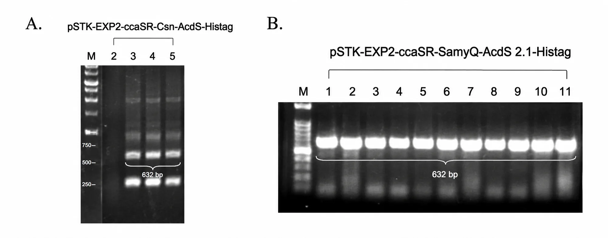
Level 2 Golden Gate panel2001×786 · WEBPDownload ↓


Level 2 digestsmall540×456 · WEBP10,293 / 7,543 bp. Visibly a spliced composite.10,293／7,543 bp。明顯是拼接合成圖。Download ↓
Production — §5產量與活性 — §5

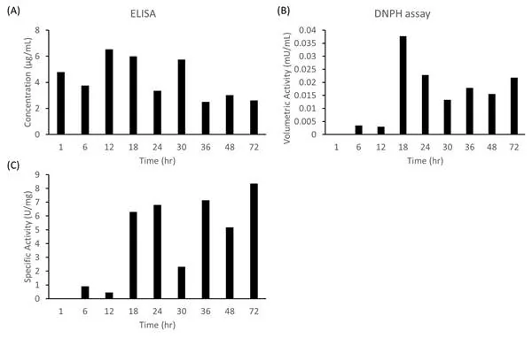
Shell permeate, 72 hsmall600×382 · WEBPYour strongest claim. Re-export this one at 1920 px.你們最強的主張。這張請重新輸出成 1920 px。Download ↓


ELISA, three protectantssmall322×441 · PNG~16 vs ~6 µg/mL. No decimals on screen.約 16 對約 6 µg/mL。畫面上不要小數。Download ↓


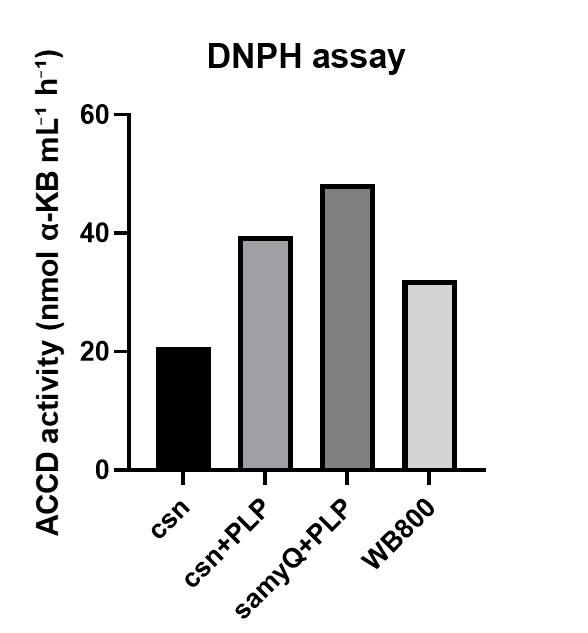
DNPH variants ±PLPsmall588×633 · PNGMethod result only — the WB800 control sits above csn.只能當方法結果——WB800 對照高於 csn。Download ↓
Light — §5光照 — §5


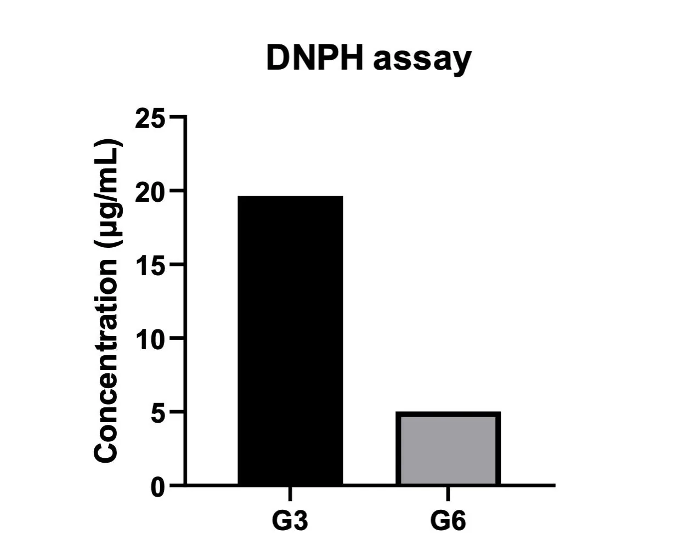
Light-induced activity1258×1016 · WEBPDownload ↓

Bioreactor — §6生物反應器 — §6


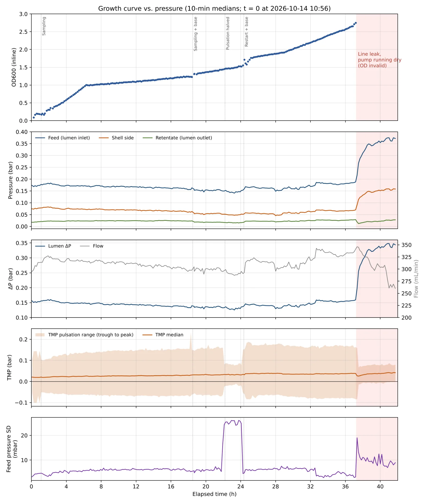
Leak event, 5 sensor channels1733×2048 · WEBPPortrait. Your best sensing evidence.直幅。最好的感測證據。Download ↓

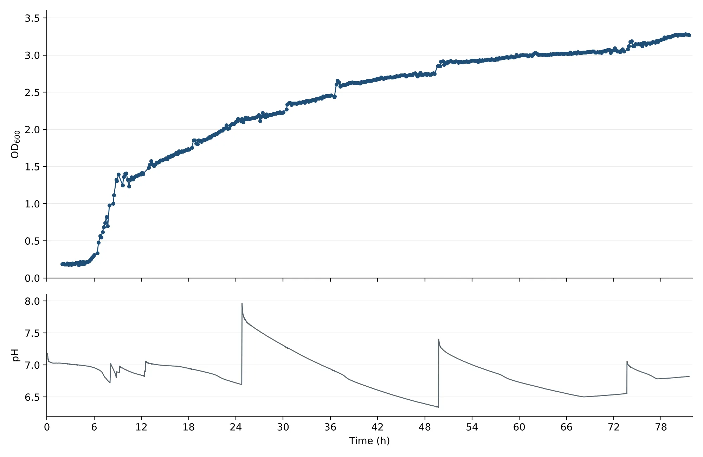
pH closed loop, 53 doses2000×1300 · WEBPDownload ↓

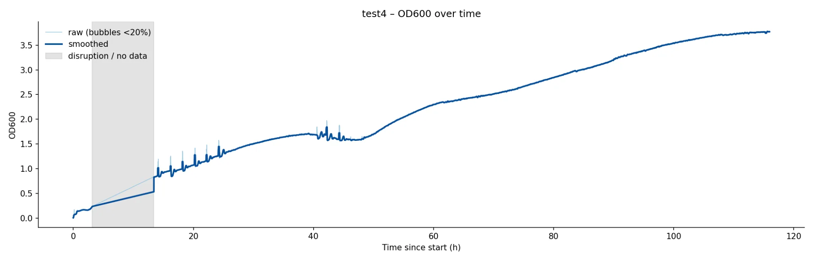
116-hour growth curve2048×658 · WEBPDownload ↓

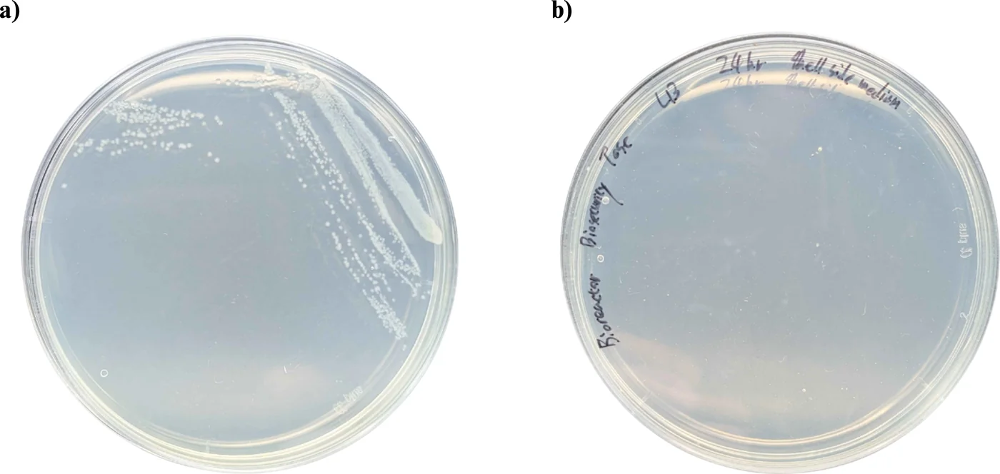
Containment plates1400×664 · WEBPCaveat required — two plates, no replicates.必須加但書——兩塊盤、沒有重複。Download ↓

Plants — §8植物 — §8

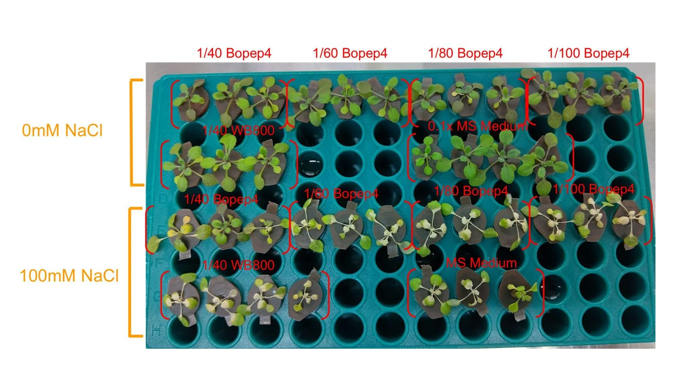
Hydroponic BoPEP4 rack1600×900 · WEBPExactly 16:9. Your best plant evidence.剛好 16:9。最好的植物證據。Download ↓

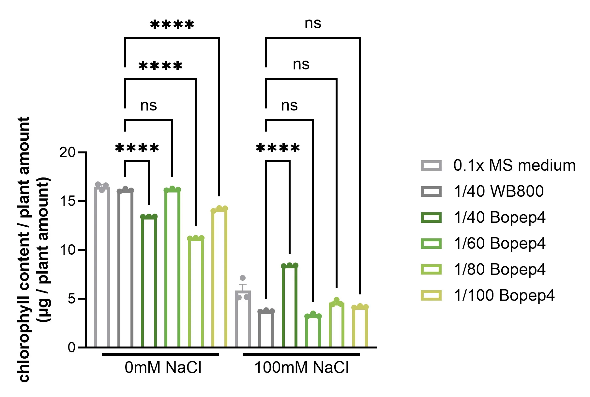
Hydroponic chlorophyll1809×1219 · WEBPDownload ↓

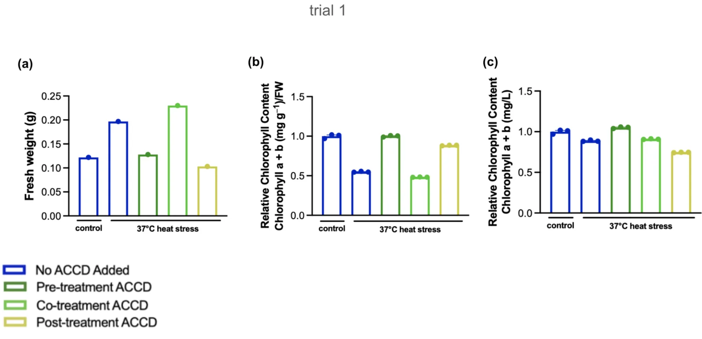
Soil heat, trial 11600×775 · WEBPDownload ↓

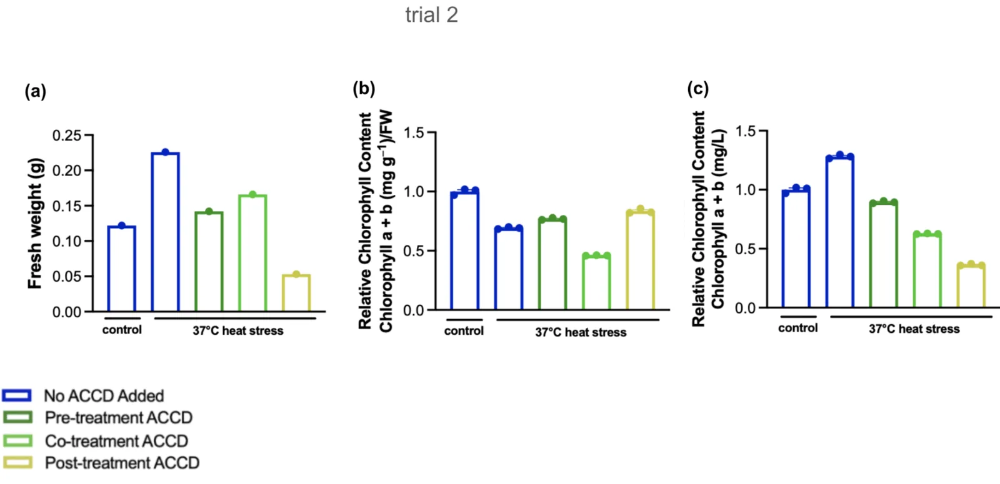
Soil heat, trial 21600×775 · WEBPDownload ↓

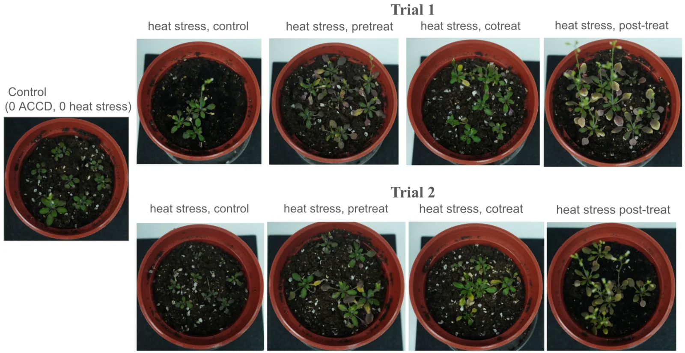
Soil pots, both trials1600×827 · WEBPUse the charts, not the pots, in the film.影片裡請用圖表，不要用盆栽照。Download ↓
Full inventory with pixel dimensions and resolution verdicts: MANIFEST.txt. Section hero frames pulled from the footage are in assets/shots/.
含像素尺寸與解析度判定的完整清單：MANIFEST.txt。從影片素材擷取的各段代表畫面在 assets/shots/。